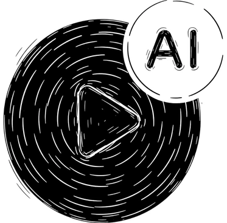

Video Promozionali con AI
Un video da solo non vende niente: contano il pubblico a cui parla, il messaggio che porta e dove finisce una volta pronto.
Un video non vende da solo. Vende quando sa a chi parla e dove andrà a finire.
Scriviamo il messaggio prima di produrre un fotogramma, poi giriamo con l'AI: niente set, niente troupe, tempi in giorni.

Tre settimane per un video che serviva la settimana scorsa
Il percorso classico lo conosce chiunque ci sia passato: riprese da organizzare, prodotto da spedire a un creator, agende di più persone da far coincidere e settimane di attesa. Quando il montaggio finale arriva, la promozione a cui doveva servire è spesso già finita.
L'AI non sostituisce la strategia, la rende semplicemente più rapida da eseguire: possiamo provare più versioni dello stesso messaggio, adattarle a pubblici e formati diversi e reagire ai dati delle campagne in pochi giorni invece che in un trimestre.
Un processo, non un video isolato
Pubblico e obiettivo
Definiamo prodotto, pubblico e scopo del video: farsi conoscere, vendere direttamente o sostenere una campagna già attiva.
Idea e messaggio
Scriviamo il messaggio centrale e l'idea creativa prima di generare un solo fotogramma.
Produzione con AI
Generiamo e montiamo il video, adattandolo ai formati di ogni canale: feed, storie, reel.
Distribuzione e varianti
Il video entra nelle campagne, organiche o a pagamento, e dai risultati decidiamo quali varianti vale la pena produrre.
Le domande che arrivano sull'AI
Dipende dall'obiettivo: per certi formati puntiamo al risultato più naturale possibile, per altri lo stile AI è esattamente il messaggio. Si decide insieme, guardando pubblico e canale.
Molto meno di una produzione con troupe e location, perché saltano spedizioni, set e giornate di riprese. Il costo cambia in base a durata, formati richiesti e numero di varianti da mandare in campagna.
Sì, è l'uso principale: li tagliamo nei formati richiesti da Instagram, Facebook e dagli altri canali e li inseriamo nel piano pubblicitario.
Giorni invece di settimane: il tempo che si risparmia è tutto quello del coordinamento fisico, tra spedizioni, set e riprese.
Vediamo cosa raccontare
Trenta minuti gratuiti per capire se i video sono davvero il primo problema da risolvere, o se conviene iniziare da un altro.